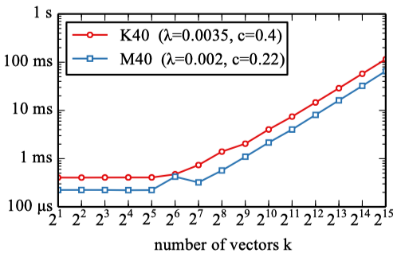
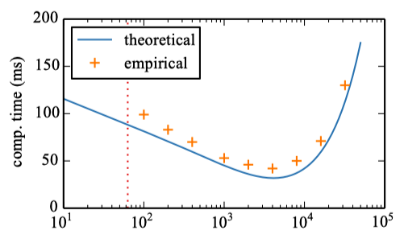
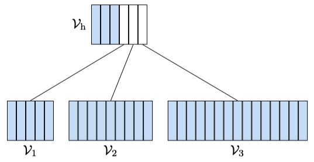
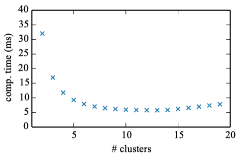
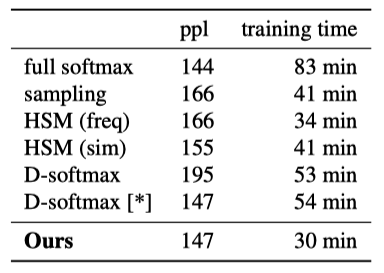
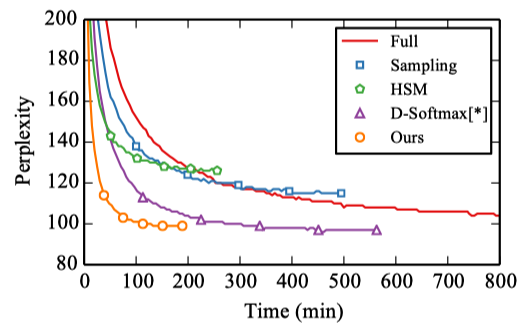
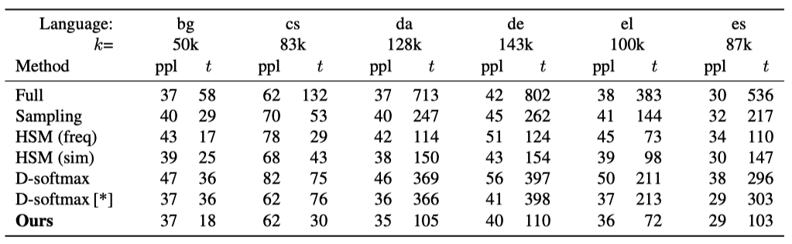
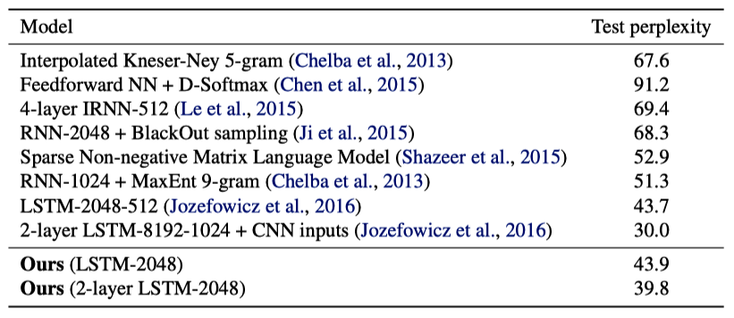

Adaptive Softmax (2016)
Efficient softmax approximation for GPUs

Adaptive softmax speeds up from 2× to 10× compared to the standard softmax without sacrificing perplexity, which is crucial for large language models (LLMs) dealing with massive corpora, saving both time and money.
LLMs deal with large vocabulary sizes. We can use the softmax function to compute the probability of a token given the context. However, softmax is often computationally inefficient for large vocabulary sizes since many tokens in the vocabulary will have near-zero probabilities. Yet, it still needs to compute the probabilities of all tokens in the vocabulary.

Ideally, we want only to compute the probabilities of the tokens that are likely to appear as the next token. But how can we do this?
That is where adaptive softmax comes in and is what this article will discuss.
Adaptive softmax exploits the unbalanced token distribution to form clusters to minimize computation time. It is particularly suited for graphical processing units (GPUs) to bring a significant gain in efficiency while maintaining accuracy close to the full softmax.
1 A Quick Review of Language Modeling
Language modeling is the task of predicting the next token in a sequence given the previous tokens. Tokens come from a vocabulary of size \(V\). In other words, the goal is to maximize the probability of the next token given the previous tokens.
Suppose we have a sequence of tokens \(w_1, w_2, w_3\), and we want to predict the next token \(w_4\) from the vocabulary \(V\). In other words, we want to know what token will most likely appear next given the previous tokens \(w_1, w_2, w_3\). If we know the probability of each token in the vocabulary, we can choose the token with the highest probability and call it the next token \(w_4\).
\[ w_4 = \arg \max_{w \in V} P(w | w_1, w_2, w_3) \]
We call this the greedy decoding strategy since we are greedily choosing the token with the highest probability. However, this is not the only way to determine the next token. A well-known alternative is beam search. Beam search is a heuristic search algorithm that explores a graph by expanding the most promising node in a limited set.
So, in general, we can think of language modeling as a search problem. We want to find the sequence of tokens \(w_1, w_2, ..., w_T\) that maximizes the probability of the sequence given the previous tokens \(w_1, w_2, ..., w_{t-1}\).
\[ P(w_1, w_2, ..., w_T) = \prod_{t=1}^T P(w_t | w_1, w_2, ..., w_{t-1}) \]
So, the probability of the sequence is the product of the probabilities of each token given the previous tokens. We can also write this using the chain rule of probability.
\[ \begin{aligned} P(w_1, w_2, ..., w_T) = &P(w_1) \times \\ & P(w_2 | w_1) \times \\ & P(w_3 | w_1, w_2) \times \\ & P(w_4 | w_1, w_2, w_3) \times \\ & P(w_5 | w_1, w_2, w_3, w_4) \times \\ &\dots \times \\ & P(w_T | w_1, w_2, ..., w_{T-1}) \end{aligned} \]
Recent language models are neural networks that take the previous tokens as input and output the unnormalized score (logits) for each token in the vocabulary.
\[ \begin{aligned} z_1, z_2, .., z_N &= \text{model}(w_1, w_2, ..., w_{t-1}) \\\\ \text{where } N &= |V| \ (\text{vocabulary size}) \end{aligned} \]
We can then compute the probability of each token using the softmax function.
\[ \begin{aligned} P(z_1) = & \dfrac{\exp(z_1)}{\sum\limits_{i=1}^N \exp(z_i)} \\ \\ P(z_2) = & \dfrac{\exp(z_2)}{\sum\limits_{i=1}^N \exp(z_i)} \\ \\ P(z_3) = & \dfrac{\exp(z_3)}{\sum\limits_{i=1}^N \exp(z_i)} \\ \\ &\dots \\ \\ P(z_N) = & \dfrac{\exp(z_N)}{\sum\limits_{i=1}^N \exp(z_i)} \end{aligned} \]
So, the time complexity of computing the probability of each token is \(O(N)\). As we can see, this is not very efficient for large vocabulary sizes.
The question is, how can we do better?
2 Adaptive Softmax
In natural languages, the distribution of tokens is highly unbalanced. A small fraction of the dictionary covers most of the probability mass. For example, in Penn TreeBank, only 20% of the vocabulary covers 87% of the document.
In other words, most of the tokens in the vocabulary will have tiny probabilities. So, we can exploit this unbalanced distribution to form clusters to minimize computation time.
Suppose \(k\) is the number of tokens in a cluster. Empirically, they found that the GPU time is flat until the number of tokens \(k\) is around 50. After that, the GPU time increases linearly with \(k\), as shown in the figure below.

So, if we have a cluster with frequently used tokens and often use that cluster to compute the probability of the next token, we can reduce the computation time. Let’s look at an example with two clusters.
2.1 Intuition with Two Clusters
For example, we can group the tokens into two clusters. The first cluster contains the most frequent tokens, and the second cluster contains the rest. Let’s call the first cluster \(V_h\) (head) and the second cluster \(V_t\) (tail).
We can train a classifier that predicts whether the next token is in cluster \(V_h\) or \(V_t\).
The classifier frequently predicts the head cluster since it contains the most frequent tokens. So, we can use the head cluster to compute the probability of the next token, which is efficient since the head cluster contains a small portion of the vocabulary.
The classifier infrequently predicts the tail cluster. Although the tail contains a large portion of the vocabulary, it is still efficient overall since computation with the tail cluster occurs much less often than with the head cluster.
As a result, we can reduce the total computation time.
Mathematically speaking, we define clusters with unbalanced cardinalities (the number of elements) and unbalanced probabilities:
- \(|V_h| \ll |V_t|\)
- \(P(w \in V_h) \gg P(w \in V_t)\)
where
- \(P(w \in V_h) = \sum\limits_{w \in V_h} P(w)\)
- \(P(w \in V_t) = \sum\limits_{w \in V_t} P(w)\)
The below shows the computational time for a two-cluster adaptive softmax on the Bulgarian Europarl data as a function of the size of the head cluster \(k_h = |V_h|\).

It shows more than 5x speed-up compared to the full softmax. The red dotted line shows the value of the parameter \(k_h\) where both clusters have equal probability mass:
\[ P(w \in V_h) = P(w \in V_t) = 0.5 \]
So, the increase in the probability of the head cluster decreases the total computation time until the number of tokens in the head cluster becomes too large, after which the computation time increases.
2.2 Efficiency vs. Accuracy
There is a trade-off between efficiency and accuracy.
We feed the previous tokens \(w_1, w_2, ..., w_{t-1}\) into the model and get the hidden state output \(h_t\) for the next token. Then, we calculate the probability of the next token \(w_t\) as follows:
\[ P(w_t | h_t) = P(C(w_t) | h_t) \times P(w_t | C(w_t), h_t) \]
where
- \(P(C(w_t) | h_t)\) is the probability of the cluster \(C(w_t)\) given the hidden state \(h_t\).
- \(P(w_t | C(w_t), h_t)\) is the probability of the token \(w_t\) given the cluster \(C(w_t)\) and the hidden state \(h_t\).
We are multiplying two estimated probabilities (two softmax results), one for cluster level and the other for token level. The model’s accuracy will be lower than directly computing the next token’s probability using the full softmax.
Therefore, we should use single-token clusters for the most frequent tokens to keep the accuracy higher, as long as the total computation time does not become too high. Single-token clusters contain only one token, meaning we are directly calculating the probability of the token.
Let’s consider general cases where we can have more than two clusters.
2.3 General Case
We partition the vocabulary as follows:
\[ V = V_h \cup V_1 \cup V_2 \cup \dots \cup V_J \]
where \(V_i \cap V_j = \emptyset \ (i \neq j)\).
\(V_h\) is the first level cluster containing the most frequent tokens. We can think of each token in \(V_h\) being a single-token cluster.

Now, the question is how to partition tokens into all those clusters \(V_h, V_1, V_2, ..., V_J\).
We define the computational cost \(C\) of the adaptive softmax as follows:
\[ C = C_h + \sum\limits_i^J C_i \]
\(C_h\) is the computational cost of the head cluster and \(C_i\) is the computational cost of the \(i\)-th cluster (for \(i = 1, 2, ..., J\)) in the second layer.
Since the first layer has \(J + k_h\) clusters, where \(J\) is the number of clusters in the second layer, and \(k_h\) is the number of tokens in the first layer, we can calculate the computational cost of the head cluster (first layer) as follows:
\[ C_h = g(J + k_h, B) \]
\(g\) is the computational cost of the softmax function, which is a function of the number of clusters (here, it’s \(J+k_h\)) and the batch size \(B\). We assume the hidden size is a fixed value \(d\) and implicitly include it in the computational cost \(g\).
For the second layer, we can calculate the computational cost of the \(i\)-th cluster as follows:
\[ C_i = g(k_i, p_i B) \]
\(k_i\) is the number of tokens in the \(i\)-th cluster and \(p_i\) is the probability of the \(i\)-th cluster. \(p_i\) multiplies the batch size \(B\) because the softmax computation for a second layer cluster happens with the probability \(p_i\).
In total, the computational cost of the adaptive softmax is the sum of the computational cost of the head cluster and the computational cost of the second layer clusters.
\[ C = g(J + k_h, B) + \sum\limits_i^J g(k_i, p_i B) \]
So, we want to minimize the computational cost \(C\) by finding the best partition of the vocabulary \(V\) into clusters \(V_h, V_1, V_2, ..., V_J\). Therefore, we need to define the function \(g\) in terms of the number of clusters and the batch size.
The figure below shows that the softmax’s computational cost increases as the cluster’s size increases after an inflection point \(k_0 \approx 50\).
So, in general, we can define the computational cost of the softmax as follows:
\[ g(k, B) = \max(c + \lambda k_0 B, c + \lambda k B) \]
where \(c\) is the fixed computational cost and \(\lambda\) is the computational cost per token. In other words, the computational cost of the softmax on GPU is a linear function of the number of tokens in the cluster, where the slope is \(\lambda\), and the intercept is \(c\) with the minimum value of \(c + \lambda k_0 B\).
If we add the constraint \(k B \ge k_0 B\) to eliminate the penalty induced by the constant part of the computational cost model, we can simplify the above equation as follows:
\[ g(k, B) = c + \lambda k B \]
Therefore, we can calculate the computational cost of the adaptive softmax as follows:
\[ \begin{aligned} C &= g(J + k_h, B) + \sum\limits_i^J g(k_i, p_i B) \\ &= c + \lambda (J + k_h) B + \sum\limits_i^J (c + \lambda k_i p_i B) \\ &= (J + 1)c + \lambda B \left[ J + k_h + \sum\limits_i^J p_i k_i \right] \end{aligned} \]
Suppose we’ve already fixed the number of clusters \(J\) and the cardinality of all clusters \(k_h, h_1, \dots, k_J\), the best strategy is to assign the tokens by the decreasing order of their probabilities (frequencies). In other words, we sort the tokens by their frequency in descending order and assign them to the clusters accordingly.
If we only fix the number of clusters \(J\), we can use dynamic programming to find the best partition of the tokens ordered by frequency into clusters. Below is the computational time for the adaptive softmax on the Bulgarian Europarl data as a function of the number of clusters.

A small number of clusters, between 10 and 15, gives the best computation time. However, more than 5 clusters do not lead to significant gains in computational time (a couple of milliseconds at best).
In practice, they use small clusters (between 2 and 5) and empirically determine the best speed/perplexity compromise on training data.
3 Experiments
They use an LSTM with one layer in all experiments and compare the adaptive softmax with the following baselines:
- The full softmax
- The hierarchical softmax with frequency binning (HSM freq) and similarity-based binning (HSM sim)
- Importance sampling (Bengio et al., 2003b; Bengio & Sen´ecal, 2008)
- The differentiated softmax (D-softmax) (Chen et al., 2015)
Below are the results on Text8, a standard compression dataset containing a pre-processed version of the first 100 million characters from Wikipedia in English. It has a vocabulary of 44k words.

Note: ppl stands for perplexity, and the lower, the better. The adaptive softmax is close to the full softmax in terms of perplexity, but it’s much faster. The baseline methods are not very effective on this small vocabulary dataset.
Below is the perplexity (ppl) as a function of training time on Europarl, a machine translation corpus containing 20 languages. Most languages have 10M–60M tokens, and the vocabulary is between 44k and 250k words.

The adaptive softmax converges much faster than other methods, thanks to its low computational cost.
Below are similar results on Europarl, showing perplexity after five epochs for different languages. t is time in minutes.

Below is the test perplexity on the One Billion Word benchmark, a massive corpus introduced by Chelba et al. (2013). It contains 0.8 billion tokens and a vocabulary comprising almost 800k words.

The adaptive softmax achieves a perplexity of 43.9 after five epochs, taking less than three days to train on a single GPU. Most other methods achieve a perplexity of 50 or higher.
Although LSTM-2048-512 (Jozefowicz et al., 2016) achieves a lower perplexity of 43.7, the model is 8× bigger and trained over 32 GPUs for three weeks.
In conclusion, the adaptive softmax consistently maintains a low perplexity while enjoying a speed-up from 2× to 10× compared to the exact model. This type of speed-up allows their model to deal with huge corpora in a reasonable time and without needing a large number of GPUs.
Moreover, the approach is general enough to be applied to other parallel computing architectures. The only requirement is that the distributions of the classes are unbalanced.
4 References
- Efficient softmax approximation for GPUs
Edouard Grave, Armand Joulin, Moustapha Cissé, David Grangier, Hervé Jégou